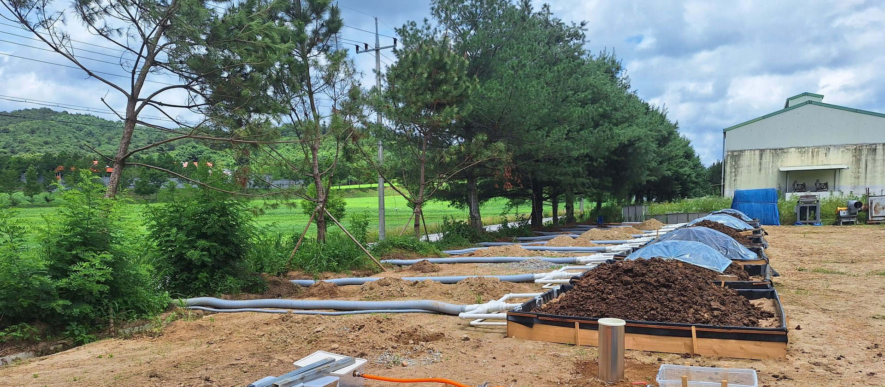

축산과 관련된 환경오염을 줄이고 가축분뇨를 퇴·액비 및 바이오에너지 등의 자원으로 활용하는 연구, 그리고 축산분야에서 발생되는 악취 및 온실가스를 평가하고 저감하는 연구를 중점적으로 수행합니다. 실험실 안에 머무르지 않고 축사와 퇴비장, 농가 현장에서 직접 측정하고 검증합니다.
연구실 소개 자세히 보기지속 가능하고 환경친화적인 축산을 목표로 네 개의 연구 축을 중심으로 기술을 개발하고 현장에 적용합니다.
실증 규모의 퇴비화 시험구와 플럭스 챔버 시스템을 직접 구축·운영하며 실제 조건에서 데이터를 확보합니다.
혁신교육시스템 구축, 창의적인 전문인력 양성, 산학연관 협동체계 구축을 목표로 합니다.